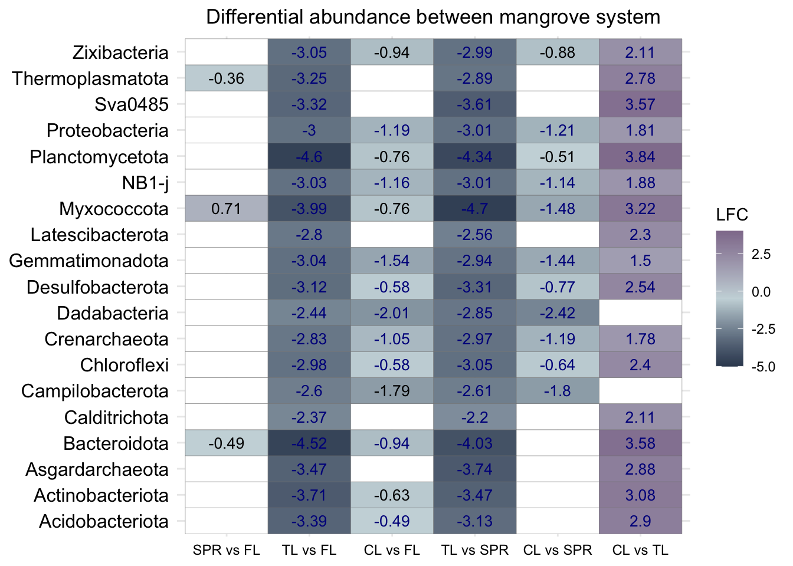
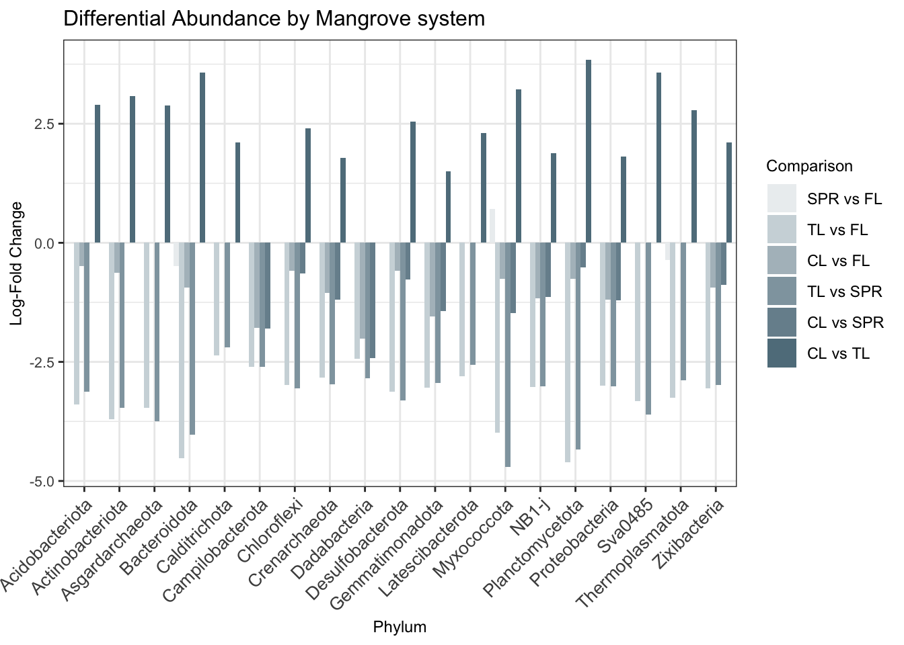

Differential Abundance
Load libraries and data
#load data
physeq_qiime3 <- readRDS("rds/compare_mangroves/physeq_qiime3.rds")# Rename mangrove system columna
colnames(sample_data(physeq_qiime3))[colnames(sample_data(physeq_qiime3)) == "Mangrove system"] <- "Mangrove_system"
# Convert Mangrove_system to factor
sample_data(physeq_qiime3)$Mangrove_system <- as.factor(sample_data(physeq_qiime3)$Mangrove_system)01. Differential abundance ANCOMBC2
01.1 Prepare data
# phyloseq to TreeSummarizedExperiment
tse <- mia::convertFromPhyloseq(physeq_qiime3)#To manually change the reference level, not alphabetic order
tse$Mangrove_system = factor(tse$Mangrove_system, levels = c("Fossil Lagoon", "San Pedro River", "Términos Lagoon", "Celestún Lagoon"))
#conver to factor using letter levels
tse$Mangrove_system <- factor(recode
(as.character(tse$Mangrove_system),
`Fossil Lagoon` = "FL",
`San Pedro River` = "SPR",
`Términos Lagoon` = "TL",
`Celestún Lagoon` = "CL",
.missing = "unknown"),
levels = c("FL", "SPR", "TL", "CL"))# contrast matrix
contrast_matrices <- list(
matrix(c(1, -1, 0,
0, 1, -1,
0, 0, 1),
nrow = 3, byrow = TRUE),
matrix(c(1, 0, -1,
0, 1, -1,
0, 0, 1),
nrow = 3, byrow = TRUE),
matrix(c(1, 0, 0,
0, 1, -1,
0, 0, 1),
nrow = 3, byrow = TRUE),
matrix(c(1, -1, 0,
0, 1, 0,
0, 0, 1),
nrow = 3, byrow = TRUE))
# nodes
nodes <- list(1, 1, 1, 1)01.2 Run ANCOM-BC2
# ANCOMBC2
output <- ancombc2(
data = tse,
assay_name = "counts",
tax_level = "Phylum",
fix_formula = "Mangrove_system",
rand_formula = NULL,
p_adj_method = "BH",
pseudo_sens = TRUE,
prv_cut = 0.10,
lib_cut = 1000,
s0_perc = 0.05,
group = "Mangrove_system",
struc_zero = TRUE,
neg_lb = TRUE,
alpha = 0.05,
n_cl = 2,
verbose = TRUE,
global = TRUE,
pairwise = TRUE,
dunnet = TRUE,
trend = TRUE,
iter_control = list(tol = 1e-2, max_iter = 20, verbose = TRUE),
em_control = list(tol = 1e-5, max_iter = 100),
lme_control = lme4::lmerControl(),
mdfdr_control = list(fwer_ctrl_method = "BH", B = 100),
trend_control = list(
contrast = contrast_matrices,
node = nodes,
solver = "ECOS",
B = 100
)
)Checking the input data type ...The input data is of type: TreeSummarizedExperimentPASSChecking the sample metadata ...The specified variables in the formula: Mangrove_systemThe available variables in the sample metadata: SampleID, BioSample, ID, SRA, SampleName, Collection_date, depth, site, elevation, Broad_scale_environmental_context, Local_scale_environmental_context, Environmental_medium, Latitude_and_Longitude, Geographic.Location, Study_zone, Ecological_type, Parametros, Temperatura, Salinidad, pH, Redox.mV, S.2, SO4, season, filter, Mangrove_system, Mangrove_typePASSChecking other arguments ...The number of groups of interest is: 4The sample size per group is: FL = 4, SPR = 7, TL = 3, CL = 11Warning: Small sample size detected for the following group(s):
FL, TL
Variance estimation would be unstable when the sample size is < 5 per groupPASSObtaining initial estimates ...ML iteration = 1, epsilon = 1.1ML iteration = 2, epsilon = 7.1ML iteration = 3, epsilon = 0.92ML iteration = 4, epsilon = 0.31ML iteration = 5, epsilon = 0.19ML iteration = 6, epsilon = 0.13ML iteration = 7, epsilon = 0.083ML iteration = 8, epsilon = 0.055ML iteration = 9, epsilon = 0.036ML iteration = 10, epsilon = 0.024ML iteration = 11, epsilon = 0.016ML iteration = 12, epsilon = 0.011ML iteration = 13, epsilon = 0.007Estimating sample-specific biases ...Conducting sensitivity analysis for pseudo-count addition to 0s ...
For taxa that are significant but do not pass the sensitivity analysis,
please flag them and proceed with caution, as they are likely false positives.
For detailed instructions on performing sensitivity analysis,
please refer to the package vignette.ANCOM-BC2 primary results ...ANCOM-BC2 global test ...ANCOM-BC2 multiple pairwise comparisons ...ANCOM-BC2 multiple pairwise comparisons against the reference group ...ANCOM-BC2 pattern analysis ...#See results
res_pair_Mangrove_system <- output$res_pair
head(res_pair_Mangrove_system) taxon lfc_Mangrove_systemSPR lfc_Mangrove_systemTL
1 Acidobacteriota -0.26768 -3.39
2 Actinobacteriota -0.23213 -3.71
3 Asgardarchaeota 0.26584 -3.47
4 Bacteroidota -0.48731 -4.52
5 Calditrichota -0.16945 -2.37
6 Campilobacterota 0.00556 -2.60
lfc_Mangrove_systemCL lfc_Mangrove_systemTL_Mangrove_systemSPR
1 -0.490 -3.13
2 -0.626 -3.47
3 -0.589 -3.74
4 -0.942 -4.03
5 -0.264 -2.20
6 -1.794 -2.61
lfc_Mangrove_systemCL_Mangrove_systemSPR
1 -0.2225
2 -0.3937
3 -0.8550
4 -0.4543
5 -0.0946
6 -1.7995
lfc_Mangrove_systemCL_Mangrove_systemTL se_Mangrove_systemSPR
1 2.904 0.158
2 3.080 0.133
3 2.882 0.311
4 3.580 0.139
5 2.110 0.223
6 0.806 0.370
se_Mangrove_systemTL se_Mangrove_systemCL
1 0.268 0.166
2 0.898 0.195
3 0.380 0.434
4 0.921 0.209
5 0.283 0.245
6 0.449 0.469
se_Mangrove_systemTL_Mangrove_systemSPR
1 0.292
2 0.903
3 0.298
4 0.924
5 0.295
6 0.323
se_Mangrove_systemCL_Mangrove_systemSPR
1 0.203
2 0.217
3 0.405
4 0.220
5 0.258
6 0.431
se_Mangrove_systemCL_Mangrove_systemTL W_Mangrove_systemSPR
1 0.297 -1.699
2 0.914 -1.743
3 0.435 0.856
4 0.937 -3.500
5 0.311 -0.759
6 0.452 0.015
W_Mangrove_systemTL W_Mangrove_systemCL
1 -12.68 -2.96
2 -4.13 -3.20
3 -9.13 -1.36
4 -4.91 -4.50
5 -8.39 -1.08
6 -5.80 -3.82
W_Mangrove_systemTL_Mangrove_systemSPR W_Mangrove_systemCL_Mangrove_systemSPR
1 -10.69 -1.094
2 -3.85 -1.812
3 -12.56 -2.112
4 -4.37 -2.065
5 -7.48 -0.366
6 -8.07 -4.179
W_Mangrove_systemCL_Mangrove_systemTL p_Mangrove_systemSPR
1 9.78 0.10412
2 3.37 0.09592
3 6.62 0.40222
4 3.82 0.00213
5 6.78 0.45646
6 1.78 0.98818
p_Mangrove_systemTL p_Mangrove_systemCL
1 2.61e-11 0.007550
2 4.81e-04 0.004254
3 1.42e-08 0.189976
4 7.44e-05 0.000196
5 3.81e-08 0.293187
6 1.39e-05 0.001144
p_Mangrove_systemTL_Mangrove_systemSPR p_Mangrove_systemCL_Mangrove_systemSPR
1 5.93e-10 0.286427
2 9.40e-04 0.084249
3 6.07e-11 0.047481
4 2.70e-04 0.051516
5 2.37e-07 0.717960
6 1.47e-07 0.000509
p_Mangrove_systemCL_Mangrove_systemTL q_Mangrove_systemSPR
1 2.86e-09 0.13119
2 2.91e-03 0.10071
3 1.89e-06 0.42233
4 9.95e-04 0.00269
5 1.06e-06 0.57514
6 9.06e-02 1.00000
q_Mangrove_systemTL q_Mangrove_systemCL
1 1.65e-10 0.011892
2 2.96e-03 0.006700
3 4.46e-08 0.239369
4 4.69e-04 0.000567
5 2.40e-07 0.461769
6 4.37e-05 0.001801
q_Mangrove_systemTL_Mangrove_systemSPR q_Mangrove_systemCL_Mangrove_systemSPR
1 1.87e-09 0.30075
2 2.96e-03 0.10071
3 3.82e-10 0.07478
4 5.67e-04 0.05409
5 7.48e-07 0.75386
6 9.26e-07 0.00107
q_Mangrove_systemCL_Mangrove_systemTL diff_Mangrove_systemSPR
1 6.01e-09 FALSE
2 6.11e-03 FALSE
3 3.97e-06 FALSE
4 1.57e-03 TRUE
5 2.22e-06 FALSE
6 1.14e-01 FALSE
diff_Mangrove_systemTL diff_Mangrove_systemCL
1 TRUE TRUE
2 TRUE TRUE
3 TRUE FALSE
4 TRUE TRUE
5 TRUE FALSE
6 TRUE TRUE
diff_Mangrove_systemTL_Mangrove_systemSPR
1 TRUE
2 TRUE
3 TRUE
4 TRUE
5 TRUE
6 TRUE
diff_Mangrove_systemCL_Mangrove_systemSPR
1 FALSE
2 FALSE
3 FALSE
4 FALSE
5 FALSE
6 TRUE
diff_Mangrove_systemCL_Mangrove_systemTL passed_ss_Mangrove_systemSPR
1 TRUE TRUE
2 TRUE TRUE
3 TRUE TRUE
4 TRUE FALSE
5 TRUE TRUE
6 FALSE TRUE
passed_ss_Mangrove_systemTL passed_ss_Mangrove_systemCL
1 TRUE TRUE
2 TRUE FALSE
3 TRUE TRUE
4 TRUE TRUE
5 TRUE TRUE
6 TRUE FALSE
passed_ss_Mangrove_systemTL_Mangrove_systemSPR
1 TRUE
2 TRUE
3 TRUE
4 TRUE
5 TRUE
6 TRUE
passed_ss_Mangrove_systemCL_Mangrove_systemSPR
1 TRUE
2 TRUE
3 FALSE
4 TRUE
5 TRUE
6 TRUE
passed_ss_Mangrove_systemCL_Mangrove_systemTL
1 TRUE
2 TRUE
3 TRUE
4 TRUE
5 TRUE
6 TRUE02. Get differential data
# Create dataframe df_fig_pair1 to log-fold change (LFC) values
df_fig_pair1_Mangrove_system <- res_pair_Mangrove_system %>%
dplyr::filter(`diff_Mangrove_systemSPR` == 1 |
`diff_Mangrove_systemTL` == 1 |
`diff_Mangrove_systemCL` == 1 |
`diff_Mangrove_systemTL_Mangrove_systemSPR` == 1 |
`diff_Mangrove_systemCL_Mangrove_systemSPR` == 1 |
`diff_Mangrove_systemCL_Mangrove_systemTL` == 1) %>%
dplyr::mutate(lfc1 = ifelse(`diff_Mangrove_systemSPR` == 1,
round(`lfc_Mangrove_systemSPR`, 2), NA),
lfc2 = ifelse(`diff_Mangrove_systemTL` == 1,
round(`lfc_Mangrove_systemTL`, 2), NA),
lfc3 = ifelse(`diff_Mangrove_systemCL` == 1,
round(`lfc_Mangrove_systemCL`, 2), NA),
lfc4 = ifelse(`diff_Mangrove_systemTL_Mangrove_systemSPR` == 1,
round(`lfc_Mangrove_systemTL_Mangrove_systemSPR`, 2), NA),
lfc5 = ifelse(`diff_Mangrove_systemCL_Mangrove_systemSPR` == 1,
round(`lfc_Mangrove_systemCL_Mangrove_systemSPR`, 2), NA),
lfc6 = ifelse(`diff_Mangrove_systemCL_Mangrove_systemTL` == 1,
round(`lfc_Mangrove_systemCL_Mangrove_systemTL`, 2), NA),
) %>% tidyr::pivot_longer(cols = lfc1:lfc6, names_to = "group",
values_to = "value") %>% dplyr::arrange(taxon)# Create dataframe df_fig_pair2 to significant values
df_fig_pair2_Mangrove_system <- res_pair_Mangrove_system %>%
dplyr::filter(`diff_Mangrove_systemSPR` == 1 |
`diff_Mangrove_systemTL` == 1 |
`diff_Mangrove_systemCL` == 1 |
`diff_Mangrove_systemTL_Mangrove_systemSPR` == 1 |
`diff_Mangrove_systemCL_Mangrove_systemSPR` == 1 |
`diff_Mangrove_systemCL_Mangrove_systemTL` == 1) %>%
dplyr::mutate(lfc1 = ifelse(`passed_ss_Mangrove_systemSPR` == 1 &
`diff_Mangrove_systemSPR` == 1, "blue", "black"),
lfc2 = ifelse(`passed_ss_Mangrove_systemTL` == 1 &
`diff_Mangrove_systemTL` == 1, "#00CCFF", "black"),
lfc3 = ifelse(`passed_ss_Mangrove_systemCL` == 1 &
`diff_Mangrove_systemCL` == 1, "#00CCFF", "black"),
lfc4 = ifelse(`passed_ss_Mangrove_systemTL_Mangrove_systemSPR` == 1 &
`diff_Mangrove_systemTL_Mangrove_systemSPR` == 1, "#00CCFF", "black"),
lfc5 = ifelse(`passed_ss_Mangrove_systemCL_Mangrove_systemSPR` == 1 &
`diff_Mangrove_systemCL_Mangrove_systemSPR` == 1, "#00CCFF", "black"),
lfc6 = ifelse(`passed_ss_Mangrove_systemCL_Mangrove_systemTL` == 1 &
`diff_Mangrove_systemCL_Mangrove_systemTL` == 1, "#00CCFF", "black")) %>%
tidyr::pivot_longer(cols = lfc1:lfc6, names_to = "group", values_to = "color") %>% dplyr::arrange(taxon)# Combine dataframes df_fig_pair1 and df_fig_pair2
df_fig_pair_Mangrove_system <- df_fig_pair1_Mangrove_system %>%
dplyr::left_join(df_fig_pair2_Mangrove_system, by = c("taxon", "group"))
# Rename groups
df_fig_pair_Mangrove_system$group <- recode(df_fig_pair_Mangrove_system$group,
`lfc1` = "SPR vs FL",
`lfc2` = "TL vs FL",
`lfc3` = "CL vs FL",
`lfc4` = "TL vs SPR",
`lfc5` = "CL vs SPR",
`lfc6` = "CL vs TL")
df_fig_pair_Mangrove_system$group <- factor(df_fig_pair_Mangrove_system$group,
levels = c("SPR vs FL",
"TL vs FL",
"CL vs FL",
"TL vs SPR",
"CL vs SPR",
"CL vs TL"))
# Filter comparisons without significant values
df_fig_pair_Mangrove_system <- df_fig_pair_Mangrove_system %>%
group_by(group) %>%
filter(any(!is.na(value))) %>%
ungroup()
# Calculate limits
lo <- floor(min(df_fig_pair_Mangrove_system$value, na.rm = TRUE))
up <- ceiling(max(df_fig_pair_Mangrove_system$value, na.rm = TRUE))
mid <- (lo + up) / 203. Plot
# heatmap
heatmap_fig_pair_Mangrove_system <- df_fig_pair_Mangrove_system %>%
ggplot(aes(x = group, y = taxon, fill = value)) +
geom_tile(color = "black") +
scale_fill_gradient2(low = "#37474FFF", high = "#907c9BFf", mid = "#bFD8DCFF", #a71a50
na.value = "white", midpoint = mid, limit = c(lo, up),
name = "LFC") +
# geom_text(aes(label = round(value, 2), color = color), size = 5, na.rm = TRUE) +
scale_color_identity(guide = FALSE) +
labs(x = NULL, y = NULL, title = "LFC between Mangrove system comparison") +
theme_minimal() +
theme(plot.title = element_text(hjust = 0.5, size = 11),
axis.text.y = element_text(size = 9),
axis.text.x = element_text(size = 8.5, angle = 45, hjust = 0.8))
# show
print(heatmap_fig_pair_Mangrove_system)Warning: The `guide` argument in `scale_*()` cannot be `FALSE`. This was deprecated in
ggplot2 3.3.4.
ℹ Please use "none" instead.
# DA barplot
library(paletteer)
da_barplot <- df_fig_pair_Mangrove_system %>%
ggplot(aes(x = taxon, y = value, fill = group, label = round(value, 2))) +
geom_bar(stat = "identity", position = "dodge") +
scale_fill_paletteer_d("ggsci::blue_grey_material") + #"rcartocolor::Purp"
# scale_fill_manual(values = c("SPR vs FL" = "orange",
# "TL vs FL" = "#a71b40",
# "CL vs FL" = "yellow3",
# "TL vs SPR" = "gray50",
# "CL vs SPR" = "#af4b91",
# "CL vs TL" = "#466eb4")) +
labs(title = "Differential Abundance by Mangrove system",
x = "Phylum",
y = "Log-Fold Change",
fill = "Comparison") +
theme_bw() +
theme(axis.text.x = element_text(angle = 45, hjust = 1, size = 10),
axis.text.y = element_text(size = 8),
plot.title = element_text(size = 12),
axis.title.x = element_text(size = 9),
axis.title.y = element_text(size = 9),
legend.title = element_text(size = 9))
#show
da_barplot